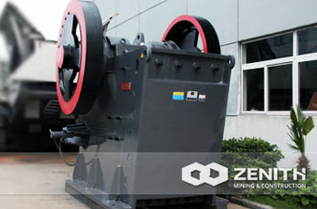

PEW Jaw Crusher
Zenith is the world's leading rocks and minerals processing equipment production enterprise, since the late 20th century have been installed around the world hundreds of ten thousand units (sets) of crushing equipment or crushing production line.And the PEW series jaw crusher jaw broken, commonly known as euro euro is my company following the traditional jaw crusher after the development of a new type of crusher.The product is the perfect combination of modern science and technology and production practice, is the first selection of high efficiency crushing hard and strong corrosive material products.
PEW Jaw Crusher Features
- Adopt world-class manufacturing technology, choose the top production materials
- The more advanced dynamic jaw assembly, make it more durable.Moving jaw assembly adopts the high quality steel structure, and through two large cast steel wheel transmission.In addition heavy eccentric shaft forging stock also USES for processing, all make the JCE series jaw crusher with extraordinary reliability
- The whole cast steel bearing can guarantee with broken frame completely, but also greatly enhance the radial strength of the bearing, and split type bearing seat don't have the advantages
- The finite element analysis technology, crusher has higher strength
- Crushing cavity use semmetry "V" shape structure, make the actual inlet width is consistent with the nominal inlet width
- The discharging mouth is more quick and convenient adjustment.Euro PEW series jaw crusher with wedge discharging mouth adjusting device, the device is better than old gasket adjustment is simple, safe and fast
- All the PEW series jaw crusher with crusher bigger and more durable than other same specification of the eccentric shaft bearing, higher bearing capacity and the effective labyrinth seal bearing is greatly extend the service life
- Using the latest toothed plate, increase the effective length of jaw, and higher yield
The working principle of PEW jaw crusher
Motor drive belt and pulley, make through eccentric shaft hubei bobbing up and down before and after, when the moving jaw promote dynamic jaw plate to the fixed jaw plate movement, material is crushed or broken.When the moving jaw and moving jaw plate under the action of eccentric shaft, spring back, previously has been crushed or cut broken material from the bottom of the jaw plate discharging mouth eduction.As the motor turns continuously and broken motor hubei as periodic pressure and discharge material, realize batch production.
The operation specification of the PEW jaw crusher
- Normal operation before feeding production
- To be crushed material should be evenly to join the crusher cavity, should avoid to lateral loading or loading, with in order to avoid unilateral overload or bear overload
- The normal work, bearing temperature rise shall not exceed 30 ℃, the highest temperature should not exceed 70 ℃.More than the temperature, should immediately stop, find out the reason and elimination
- Stop before, should first stop charging, after being broken cavity material completely discharge, may shut off the power
- When broken, such as parking, caused by crushing cavity material obstruction should immediately shut off the power to stop operation, after crushing cavity clean material, before starting any
- After jaw side wear, adjustable head use
- It should be tight bushing to tighten after using a period of time, in case the adapter bushing is loose and damage the machine